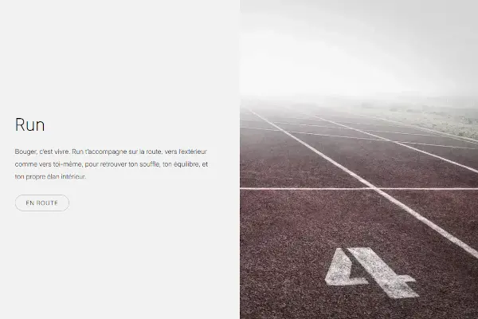

Stack Technique

À propos du projet
Le projet Run est une landing page fictive dédiée au sport et au bien-être, développée dans le cadre d’un exercice d’intégration de maquette. L’objectif était de reproduire fidèlement une interface moderne et dynamique, tout en assurant un rendu responsive, propre et fluide. Ce projet m’a permis de mettre en pratique mes compétences en HTML et SASS, notamment sur la gestion des animations, des transitions et de la hiérarchie visuelle.
J’ai notamment travaillé sur des effets de survol fluides, des animations CSS légères, ainsi que sur une structuration SASS claire en partials. L’optimisation responsive a été un point central, avec des breakpoints bien placés et un ajustement fin de la typographie. Ce projet m’a aussi permis d’expérimenter une organisation de fichiers plus modulaire et d’améliorer ma rigueur sur la propreté du code.
Fonctionnalités clés
- ✔️ Interface responsive fluide : adaptation sur tous les formats d’écran avec une grille mobile-first et des breakpoints optimisés.
- ✔️ Effets de survol animés : transitions CSS douces sur les boutons et les images pour renforcer l’interactivité.
- ✔️ Architecture SASS modulaire : code organisé en partials logiques (_variables, _mixins, _header, etc.) pour une meilleure maintenabilité.
Aspects techniques
Architecture
Le projet Run suit une architecture simple mais solide, pensée pour la clarté et la maintenabilité. Le HTML est sémantique et structuré autour de sections logiques (header, main, footer), tandis que le CSS est géré entièrement en SASS via une organisation modulaire (partials et imports via un fichier main.scss). J’ai utilisé le pattern BEM pour la nommage des classes, et adopté une logique mobile-first avec des media queries progressives. Les animations sont gérées avec des transitions CSS, et la mise en page repose sur Flexbox, facilitant l’adaptation à différentes résolutions.
Défis techniques
Un défi important a été d’adapter la mise en page pour qu’elle reste cohérente et lisible sur tous types d’écrans. La maquette de base étant pensée pour desktop, il a fallu repenser certaines sections pour le mobile : gestion des espacements, repositionnement des éléments, ou encore réorganisation de certains blocs. J’ai utilisé une approche mobile-first avec des media queries bien ciblées, en jouant sur les flex-direction, gap et padding, pour garantir une expérience fluide sans casser la structure visuelle.